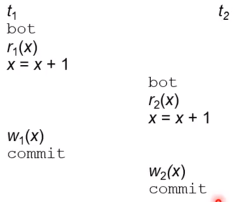
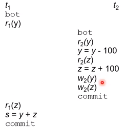
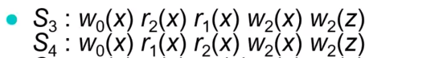
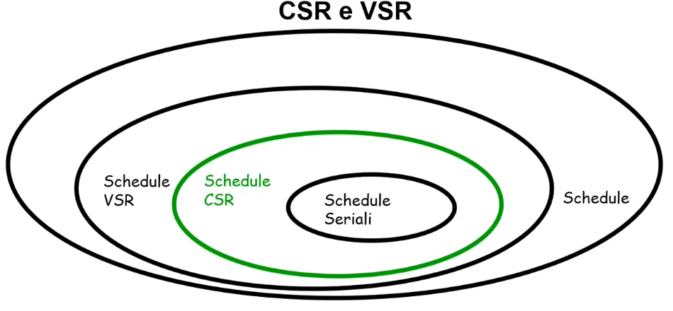

Supponiamo di avere due transazioni identiche t1 e t2 che incrementano un certo valore x di 1. Supponiamo che il valore di x iniziale è 2.
Se le due transazioni fossero eseguite serialmente otterremo x=4. Lo stesso risultato deve essere garantito nel caso in cui le transazioni sono eseguite in maniera concorrente.
Non è difficile pensare ad una situazione in cui senza controllo della concorrenza l'esecuzione delle transazioni dia un risultato non consistente.
La cosa che notiamo è che il begin della t2 inizia prima della scrittura della t1. In altre parole, quando inizia t2 x=2 perchè non sono state salvate le modifiche della t1. Alla fine avremo come risultato finale x=3.
Quindi senza un controllo delle concorrenze otteniamo un risultato errato.
Questo problema si chiama perdita di aggiornamento
In questo caso la t2 legge il valore scritto dalla t1, ma la t2 finisce con un abort. Quello che succede è che la t2 legge in realtà un valore intermedio.
Alla fine avremo un valore di x=4 che non è corretto.
Assumiamo ci sia un vincolo di integrità y+z=1000.
s=1100, il vincolo sembra non essere soddisfatto. In realtà quello che succede è che la t1 legge un valore di y che è non aggiornato in base alle azioni fatte dalla t2.
In questo caso anche se l'inserimento c'è stato dalla t2, per la t1 è come se non fosse mai successo, perchè legge i valori prima dell'inzio della t2.
Possiamo sintetizzare queste anomalie in:
Il gestore della concorrenza si occupa proprio di evitare queste anomalie.
Uno schedule è una sequenza di operazioni i i/o di transazioni concorrenti.
Esempio
$$S_1:r_1(x)r_2(z)w_1(x)w_2(z)$$Per ogni schedule consideriamo una commit-proiezione e ignoriamo le transazioni che vnno in abort, rimuovendo tutte le loro azioni dallo schedule.
Quindi per ogni schedule consideriamo solo transazioni andate a buon fine.
Il commit in uno schedule viene fatto li dove troviamo una write (w).
Uno scheduler è un sistema che accetta,rifiuta o riordina le operazioni richieste dalle transizioni. Uno scheduler deve in stream (realtime).
Uno schedule seriale è un insieme di transazioni in modo che queste siano separate ed eseguite una alla volta, ad esempio:
$$S_2:r_1(x)r_1(z)w_1(x)r_2(z)w_2(z)$$Uno schedule serializzabile produce lo stesso risultato di uno schedule seriale sulle stesse transazioni. In altre parole si tratta di uno schedule che produce esattamente lo stesso risultato, prese le stesse transazioni, di uno schedule seriale. Per dire che uno schedule è equivalente ad un altro schedule, abbiamo necessità di una nozione di equivalenza tra schedule.
L'idea è quella di trovare delle classi di schedule serializzabili e la cui serializzabilità sia verificabile a basso costo in modo da poter essere fatto realtime dalla base di dati.
Vediamo alcune definizioni preliminari:
In altre parole diciamo che una transizione i sull'oggetto x legge-da una scrittura della transizione j sempre su x in uno schedule S se la scrittura di j precede la lettura di i in S e non c'è una transizione k tra $r_i(x)$ e $w_j(x)$.
Esempio
Notiamo prima d tutto che S4 è seriale.
Analizziamo S3:
Analizziamo S4:
Visto che S3 ed S4 hanno le stesse relazioni legge-da e le stesse scritture finali allora sono view-equivalenti.
S3 è view-serializzabile perchè view-equivalente a S4 che è seriale.
Determinare la verifica della view-equivalenza dati due schedule è un'operazione polinomiale. Determinare invece la View-serializzabilità di uno schedule è un problema np-completo non attuabile in realtà.
In altre parole se ci viene dato uno schedule è inconveniente capire se è view-serializzabile. è possibile trovare alcune pratiche per mitigare il problema (conflict-serializzabilità).
Vediamo alcune definizioni preliminari:
Ogni schedule conflict-serializzabile è view-serializzabile, non vale necessariamente il viceversa.
Come conseguenza abbiamo che:
